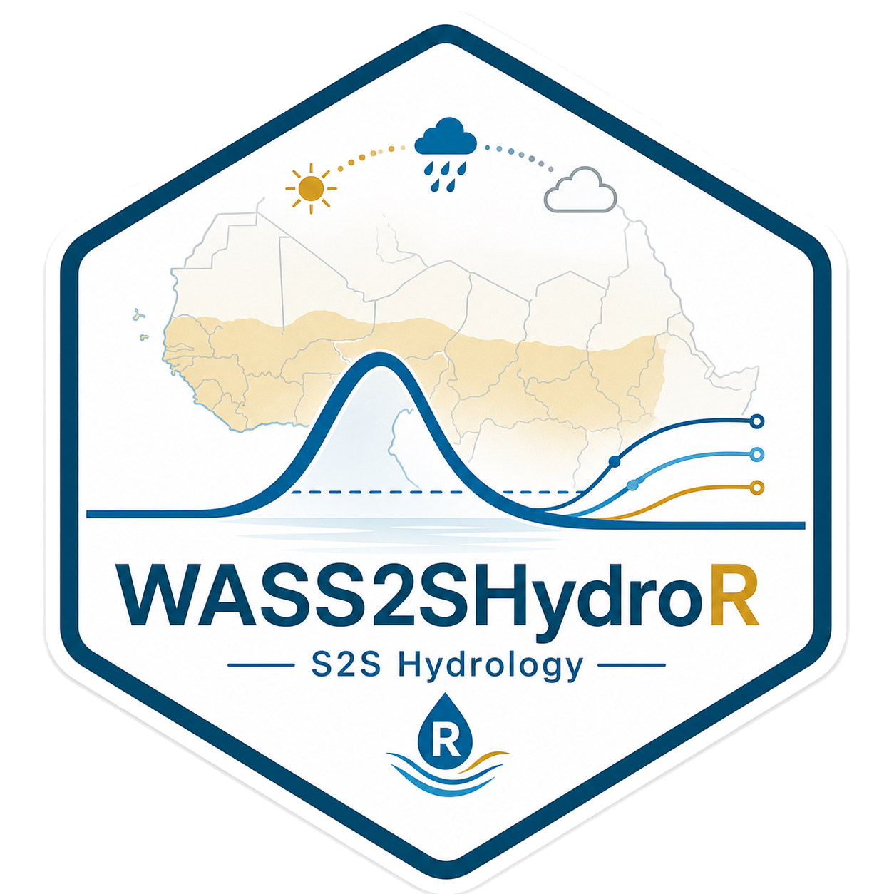

Plot probability maps for below/normal/above classes (faceted) with extra layers
Source:R/maps-prob.R
plot_prob_maps.RdJoin a basin geometry and a table of class probabilities, then plot faceted maps (one facet per class). Expects columns `p_below`, `p_normal`, `p_above`. If your table has several years, filter beforehand.
Usage
plot_prob_maps(
sf_basins,
probs_df,
basin_col = "HYBAS_ID",
limits = c(0, 1),
palette = c("viridis"),
facet_labels = c(p_below = "Below", p_normal = "Normal", p_above = "Above"),
title = NULL,
file = NULL,
width = 10,
height = 6,
layers = NULL,
layer_position = c("below", "above"),
sf_crop = NULL,
basin_line_color = "grey70",
basin_line_size = 0.1
)Arguments
- sf_basins
sf object or path to a vector file (shapefile, gpkg, …).
- probs_df
data.frame with one row per basin and columns: `basin_col`, `p_below`, `p_normal`, `p_above`.
- basin_col
name of the basin id column shared by both inputs.
- limits
numeric length-2 for the fill scale limits (default c(0,1)).
- palette
continuous palette for probabilities (e.g. "viridis", "magma").
- facet_labels
named character vector to rename facets, e.g. c(p_below="Below", p_normal="Normal", p_above="Above").
- title
optional title.
- file
optional path to save the figure via ggsave (format inferred from extension).
- width, height
units in inches for saving (if `file` supplied).
- layers
optional list of layers. Two supported formats: - ggplot2 layers: `list(geom_sf(...), geom_sf(...))` (all placed by `layer_position`) - positioned layers: `list(list(layer = geom_sf(...), position = "below"), list(layer = geom_sf(...), position = "above"))`
- layer_position
default position for `layers` when passed as plain ggplot layers (ignored when `layers` is passed in positioned format).
- sf_crop
optional sf object or path used to crop the plot extent (e.g., country boundary).
- basin_line_color
basin border color.
- basin_line_size
basin border size.